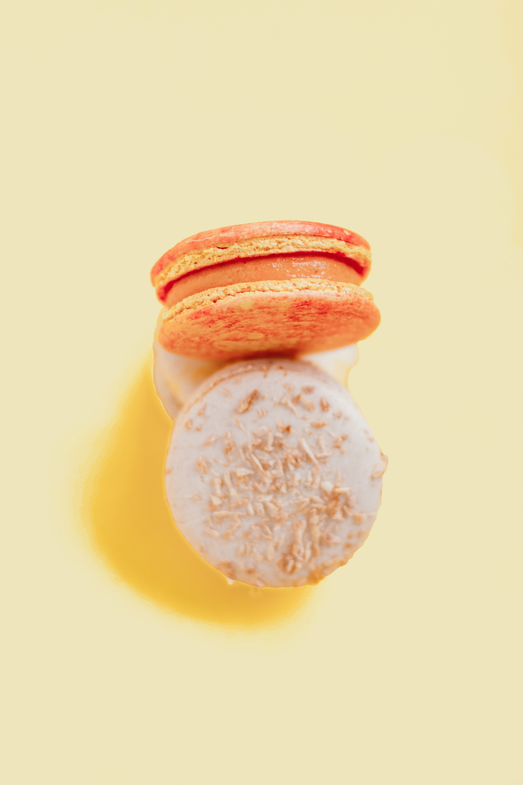

A pause, a moment, a Oui.
OUI is more than a café — it is a celebration of elegance, simplicity, and the beauty of the moment. Inspired by French lifestyle and calm sophistication, we serve coffee, tea, and light treats in an atmosphere designed to slow you down and invite you to breathe. At OUI, every detail — from the space to the flavor — is crafted to say “yes” to life.
Explore the history of OUI
